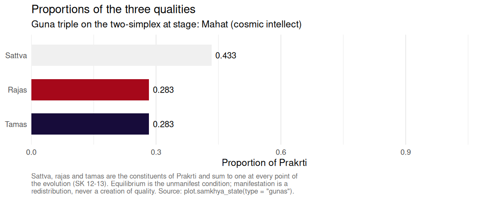
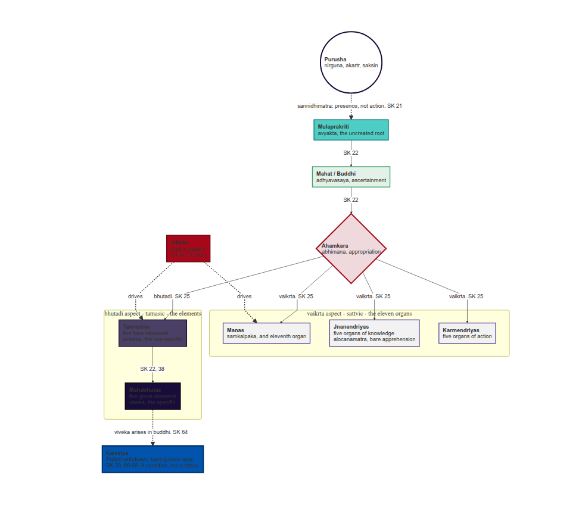

Purusha Prakriti se bhinna hai. Consciousness is distinct from matter. The witness is distinct from nature. The package that compiles distills the awareness of the wild.
Overview
SamkhyaR provides computational tools for the enumeration and the causal derivation of classical Sāṃkhya, one of the six orthodox schools (ṣaḍdarśana) of Indian philosophy. The package carries the twenty-five principles (tattva) as a documented data object, simulates the branching evolution of Prakṛti as the Sāṃkhyakārikā states it, renders the derivation as a diagram, and supplies reference objects for the doctrines that surround the evolution.
Sāṃkhya distinguishes two irreducible realities. Puruṣa (पुरुष) is consciousness: witness, neutral, spectator, non-agent. Prakṛti (प्रकृति) is the unconscious material principle, constituted by the three qualities sattva, rajas and tamas, which in equilibrium constitute the unmanifest and in disequilibrium the whole manifest world. From their conjunction the twenty-three evolutes of Prakṛti proceed.
Sources are cited to verse throughout, and commentarial positions are distinguished from the text of the kārikā rather than blended into it.
The twenty-five tattvas
Sāṃkhyakārikā 3 partitions the principles four ways: one uncreated root, seven that are at once effects and causes, sixteen that are effects only, and Puruṣa who is neither.
| Class | Sense | Members | n |
|---|---|---|---|
| avikṛti | Uncreated root | mūlaprakṛti | 1 |
| prakṛti-vikṛti | Effect and cause both | mahat, ahaṃkāra, the five tanmātras | 7 |
| vikāra | Effect only | the eleven organs, the five gross elements | 16 |
| na prakṛtir na vikṛtiḥ | Neither | puruṣa | 1 |
The arithmetic is 1 + 7 + 16 + 1 = 25, from which it follows that Prakṛti has twenty-three evolutes and not twenty-four: mūlaprakṛti is not an evolute of herself, and Puruṣa is not an evolute at all.
Quick start
The evolution branches rather than running in a single chain. Sāṃkhyakārikā 25 assigns the eleven organs to the sattvic (vaikṛta) aspect of ahaṃkāra and the five tanmātras to its tamasic (bhūtādi) aspect; the two proceed in parallel, and the gross elements descend from the tanmātras alone.
library(SamkhyaR)
manifested <- samkhya_evolve(guna_dominant = "sattva", verbose = FALSE)
manifested
#> <samkhya_state>
#> Stage: Mahabhutas (the specific)
#> Gunas: sattva = 0.433, rajas = 0.283, tamas = 0.283 (sum = 1.000)
#> Evolutes manifest: 23 of 23
#> Cognitive situation: Visesa (the specific): the gross world stands manifest
#> Viveka in buddhi: Not attained
#> Prakrti acting for this Purusha: Yes
#> Purusha: Witness, neutral, non-agent; neither bound nor released (SK 19, 62)
summary(manifested)
#> <summary.samkhya_state>
#>
#> Stage: Mahabhutas (the specific)
#> Cognitive situation: Visesa (the specific): the gross world stands manifest
#>
#> Qualities of Prakrti (SK 12-13)
#> Sattva = 0.4333 Rajas = 0.2833 Tamas = 0.2833 Sum = 1.0000
#>
#> Structural partition of what has manifested (SK 3)
#> Avikriti, uncreated root : 1 of 1
#> Prakriti-vikriti, effect and cause both : 7 of 7
#> Vikara, effect only : 16 of 16
#> Evolutes of Prakrti manifest : 23 of 23
#>
#> Branches issuing from ahamkara (SK 25)
#> Vaikrta, sattvic: the eleven organs : 11 of 11
#> Bhutadi, tamasic: the five tanmatras : 5 of 5
#> Taijasa, rajasic: supplies activity to both, issues no tattva
#>
#> Internal organ, threefold (SK 33): mahat, ahaṃkāra, manas
#> Subtle body, eighteenfold (SK 40): 18 of 18 constituents
#>
#> Viveka in buddhi: Not attained
#> Prakrti acting for this Purusha: Yes
#> Purusha: Unchanged throughout; neither bound nor released (SK 62)Because the branches are parallel, the tanmātras are reachable from a state carrying ahaṃkāra and no organ whatever.
ahamkara_only <- init_prakriti() |>
evolution_buddhi(verbose = FALSE) |>
evolution_ahamkara(verbose = FALSE)
summary(evolution_tanmatras(ahamkara_only, verbose = FALSE))$branches
#> vaikrta bhutadi
#> 0 5Kaivalya
Sāṃkhyakārikā 62 is explicit that no one is bound, no one is released and no one transmigrates; it is Prakṛti, in her manifold supports, who is bound and released. Discriminative knowledge arises in buddhi, and what ends is Prakṛti’s activity on behalf of that Puruṣa. Accordingly nothing in this package alters the description of Puruṣa that a state carries.
final <- get_kaivalya(manifested, verbose = FALSE)
final$viveka
#> [1] TRUE
final$prakriti_active
#> [1] FALSE
# Purusha is returned exactly as it was.
identical(final$purusha, manifested$purusha)
#> [1] TRUEGuṇa dynamics
The three qualities are proportions of one substance and sum to one at every point of the evolution. A disturbance of the equilibrium redistributes them; it does not create quality.
states <- lapply(c("sattva", "rajas", "tamas"), function(g)
evolution_buddhi(init_prakriti(), guna_dominant = g, verbose = FALSE))
sapply(states, function(s) s$gunas)
#> [,1] [,2] [,3]
#> sattva 0.4333333 0.2833333 0.2833333
#> rajas 0.2833333 0.4333333 0.2833333
#> tamas 0.2833333 0.2833333 0.4333333
sapply(states, function(s) sum(s$gunas))
#> [1] 1 1 1
The derivation as a diagram
DiagrammeR::mermaid(create_samkhya_flowchart(), height = 780)
Doctrinal reference
The package also carries the doctrines that surround the evolution, each cited to verse: the three means of valid knowledge in the kārikā’s own vocabulary (dṛṣṭa, anumāna, āptavacana, SK 4-6), the eight dispositions of buddhi with the fiftyfold intellectual creation (SK 23, 43-51), the eighteen constituents of the subtle body (SK 39-42), and the five arguments for the pre-existence of the effect in its cause (SK 9).
linga_sharira()$n
#> [1] 18
satkaryavada()$table$term
#> [1] "asadakaranat" "upadanagrahanat" "sarvasambhavabhavat"
#> [4] "saktasya sakyakaranat" "karanabhavat"Philosophical sources
The classical statement of the system is the Sāṃkhyakārikā of Īśvarakṛṣṇa, composed in or around the fourth or fifth century CE. The commentarial tradition matters more than usual here, because many claims circulated as Sāṃkhya belong to the commentators rather than to the kārikā: the Yuktidīpikā is the most philosophically substantial commentary, Gauḍapāda’s Bhāṣya the most widely read, Vācaspati Miśra’s Tattvakaumudī the standard scholastic exposition, and Vijñānabhikṣu’s Sāṃkhyapravacanabhāṣya a late synthesis that departs from the kārikā on several points, theism among them. Classical Sāṃkhya is nirīśvara, without a lord.
Full bibliographic detail, with DOIs and ISBNs, is given in the vignettes.
Vignettes
The package ships 2 vignettes:
- Introduction to Sāṃkhya philosophy: the twenty-five tattvas, a verse-by-verse presentation of the system
- सांख्यदर्शनस्य परिचयः - पञ्चविंशतितत्त्वानि, the same presentation in Sanskrit, section for section
Contributing
Contributions are welcome. Accuracy to the Sāṃkhyakārikā is the governing constraint: a claim taken from the kārikā should carry its verse number, a claim taken from a commentary should name the commentator, and the two should not be blended. Scholarly references are expected for philosophical claims, and every exported function ships with testthat coverage.
Citation
@software{samkhyar,
author = {Almaraz, Pablo},
title = {SamkhyaR: computational exploration of the Samkhya darsana and its twenty-five tattvas},
year = {2026},
note = {R package version 0.2.0},
url = {https://github.com/robustecologies/SamkhyaR}
}Disclaimer
This package is the original creation of the author in all conceptual, theoretical and design aspects. Implementation was assisted by Anthropic’s Claude Code to streamline package development. All original ideas, creativity and scientific contributions belong to the author, who maintains full responsibility for the package’s correctness and reliability. Users are encouraged to report any issue through the package’s issue tracker.